knitr::include_graphics(file.path(OUT_ROOT, "fig_access_per_capita.png"))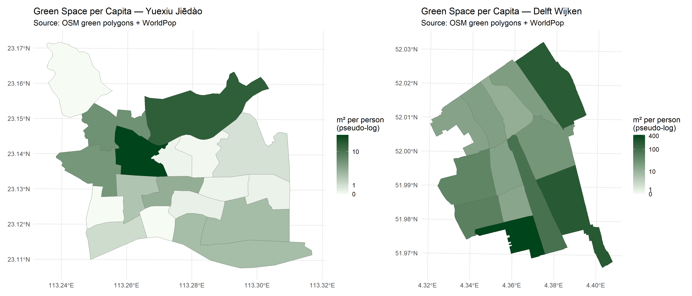
Project report of Group E
Due to rapid urbanisation, the pressure on urban green space increases and the benefits are often unevenly distributed across neighborhoods. Green spaces are essential urban infrastructure that influence the physical and mental well-being of inhabitants. They provide urban climate improvements through shade, cooling, better air quality, and also provide in space for physical activity, leisure, and social interaction. Not only are they beneficial to humans, they also help with biodiversity conservation and species attraction. Which ultimately increase ecological, social, and health benefits. However, not all citizens have equal access to these green spaces and they differ in quality. Therefore, their benefits depend not only on the presence of green spaces, but also on their accessibility, ecological quality, and spatial distribution. Research emphasizes multi-functional blue-green infrastructure rather than isolated parks. (Morris, 2003; Kasim, et al., 2019)
Connectivity is a key dimension of green space quality, since urban green spaces often function better as networks rather than independent elements. Better connectivity in between UGS supports ecological processes such as species movements, habitat continuity, and biodiversity conservation as well as attraction. Better connected green networks improve human access and movement through cities. Despite growing attention to continuous green infrastructure, connectivity is often evaluated seperately from biodiversity and accessbility.
Spatial justice concerns the fair distribution of urban resources and opportunities across populations (Rocco, n.d). Spatial justice in relationship to UGS seeks to understand wether the benefits are distributed equitably among residents. When we look at urban green space, spatial justice is not only determined by the quality of green space, but by how well green spaces are connected, accessible, and ecologically functional. Unequal access to UGS can reinforce existing social and environmental inequalities. Traditional urban plans often focus on quantity or proximity of parks alone, but access to high-quality green spaces is increasingly recognised as a spatial justice issue. Measuring spatial justice requires considering not only the amount of green space, but also who can access it and under what conditions. (De Sousa Silva et al., 2018)
Municipalities and planners are looking for ways to improve not only the amount, but also the quality of these urban green spaces. Understanding how accessibility identifies opportunities to improve spatial justice.
How urban green spaces are distributed across different city districts depends not only on factors such as accessibility and proximity, but also neighbourhood profile differences, such as density and income. Residents may live close to green areas, but have limited access due to fragmentation or poor connectivity (source3). -> redundant?
Having optimal connectivity between urban green spaces increases quality; it becomes more accessible for humans as well as non-humans, providing better habitat and improving the ecological value of urban green spaces. Connected green networks improve ecological functioning by facilitating movement of species and strengthens the ecosystem resilience. The amount of biodiversity thus plays a role in determining the quality of the UGS (Irvine et al., 2008).
Many studies focus on either ecological connectivity or social accessibility, while fewer integrate both perspectives. Existing assessments often rely on single indicators and do not capture the multidimensional nature of green space quality. Therefore, this study aims to provide an analytical framework that combines accessibility, connectivity, biodiversity, and spatial justice into a single evaluation tool. There is a need for a reproducible method that evaluates urban green space quality in relation to spatial justice across different urban contexts.
By comparing the contrasting urban contexts of Delft and Guangzhou, this study uses different criteria to determine on UGS quality. Delft and Guangzhou represent different geographical and cultural contexts in which urban development takes place. A comparative approach here helps identify both context-specific challenges as well as reproducable decision-making tools. The framework integrates indicators of accessibility, connectivity, biodiversity, and spatial justice within a spatial MCDA (Multi-criteria Decision Analysis). The outcome is a decision-support tool that identifies areas for intervention an provides planning recommendations for improving urban green space quality and connectivity.
For humans; green corridors as places to do sports, relax, meet people and help reduce risks from climare change impact by cooling the city through green corridors. For non-humans; provide animals and pollinators to move better than when they are stuck only on their green spaces ( Cardinali, 2024)
In China, there has been efforts of green corridor (Chengdu’s Tiangfu Greenway, Beijing urban green corridor). Study by Tang et al (2022) found that Guangzhou’s greenways have met residents’ needs (moderate, barely balanced relationship –0.5885/1) between greenway supply and demand. However, high-density areas have uneven access.
Built-up area of Guangzhou of China from 1986 to 2018 continued to increase. However, the vegetation area continued to decrease during 32 years. (Guo et al, 2021)
Other than green corridors, we can also look at urban river corridors that proves to contribute to a healthy city, healthier resident and recreational opportiunities – adding ecological and social value (Claudiu)
Study by Meerow (2019) on green infrastructure spatial planning model for evaluating ecosystem service trade-offs and synergies across three coastal megacities through spatial criterion evaluation. One of the metrics; access to green space, used an indicator representing the population weighted mean distance to the nearest park for all buildings within a census tract (Logan et al 2019) – thus calculating distance between nearest park to building.
High levels of ecological connectivity within an urban landscape enables animals to move between patchy resources and allows for breeding whilst maintaining gene flow. In contrast, low levels of ecological connectivity restricts access to resources and prevents the movement of individuals and genes, inbreeding depression and extinction. Methodology include quantifying ecological connectivity; City biodiversity Index that calculates the probability of two randomly chosen locations to be connected and not separated by barriers. Tools used; Excel and ArcGIS (Kirk et al, 2023)
The aim of the research is to develop a spatial analytical tool for evaluating urban green space quality by investigating the relationship between accessibility, connectivity, biodiversity, and ultimately, spatial justice. This relationship is compared in two contrasting urban contexts: Delft (The Netherlands) and Guangzhou (China). The framework identifies areas where interventions can improve urban green space quality and translates findings into planning recommendations for increasing this quality.
Quantify the spatial distribution and accessibility of urban green spaces.
SQ1: How accessible are green spaces for residents?
Evaluate connectivity between different urban green spaces.
SQ2: What are the different typologies of urban green spaces and their access?
Assess spatial justice through the relationship between population and access to green space.
SQ3: How equitable are green spaces distributed across administrative units in relation to population demographics?
Compare how strong these relationships are in different cities (Delft vs Guangzhou).
SQ4: How does urban green space relate to spatial justice in Delft compared to Guangzhou?
Translate analytical findings into strategies for increasing UGS quality
SQ5: How do the differences between the two cities show how connectivity and accessibility can improve spatial justice? What strategies are suggested to improve spatial justice?
How does Quality and Connectivity of Urban Green Spaces Contribute to Spatial Justice in Delft and Guangzhou? How does connectivity in between urban green spaces contribute to spatial justice in the cities Delft and Guangzhou?
Study sites: Delft, The Netherlands and historic center district of Yuexiu in Guangzhou, China.
Methodology aims to be reproducible for either small cities or city districts. It concludes with providing a strategy for nature-based solutions to improve the relationship between spatial justice and green space connectivity.
This study addresses the research question by breaking it up in several research sub-questions, which will come together in forming a MCDA. The study hopes to provide a method to determine the quality of urban green spaces, and therefore provide a tool for planners and designers to identify aspects for urban green space improvement for more informed decisions.
The empirical analysis of this paper is split into four categories to provide more structure in throughout the data collection and evaluation, taking into account its multi-criterion nature. Within each of the categories, multiple relevant spatial analysis are conducted to provide meaning for the comparison between Delft and Yuexiu, to evaluate connectivity between green spaces.
Accessibility evaluates the population accessibility with green areas. The analysis conducted are; green space per capita, measuring the square meters of green space per person within an administrative boundary, buffer analysis to measure percentage of people within different walking distances (e.g. 300m and 500m), and mean nearest green space distance per sub-district, captured based on the centroid of each administrative boundary of the sub-district.
Typology diversity
Species observation density is compared against patch size. The species observation density obtains its data from Global Biodiversity Information Facility (GBIF), an open-access database for biodiversity data. Thus, revealing the relationship between patch size (size of park) compared to the abundance of wildlife within it. \[\log(\text{Area}) \quad \text{vs.} \quad \log\left(\frac{\text{Observations}}{\text{Area}}\right)\]
Urban green spaces are heterogeneous (source 2). Different spaces provide in different ecological and social functions. Typologies can help identify recurring patterns across neighbourhoods/contexts. To identify these recurring patterns, this research does a typology construction, making use of the indicators derived from the sub research questions. These observations are grouped based on indicator values. Through answering which urban green spaces are similar to others, there is a typology set created, which can then be used to classify and rate the chosen location on its urban green space quality through an MCDA. Resulting typologies reveal different combinations of accessibility, connectivity, biodiversity, and the neighbourhoods’ demographic context.
Spatial justice Gini coefficient is a measure of statistical dispersion, used in this report too reveal the urban green space inequality (within meaningful residential population, current minimum population is 100). Value of 0 reflects perfect equality, whereas value of 1 represents maximum inequality. In this case, gini of 0 means equal access of green space for everyone, whereas 0, means that an area has nearly all the green spaces within the city. It is closely linked to the Lorenz curve as the Gini score is a direct reflection of the shape of the Lorenz Curve.
Bivariate choropleth is also used to visualize density of green space per administrative boundaries against population. Lastly, green space-income correlation is used to capture the relationship between the two variables.
Lorenz curve \[G = \frac{A}{A + B}\]
Connectivity The landscape structure uses number of patches (NP) and mean patch size (MPS) in hectares to define overall availability and average size of habitat fragments. Moreover Eucladian Nearest Neighbour (ENN) is also computed by taking the centroid of green patch, thus evaluating the distance of green patches from each other as metric of connectivity. Taking it further, the green patch centroids are used as network nodes. Edges are also defined as the line connecting these nodes. Through Breadth-First-Search (BFS), number of connected components are calculated. This also allows for isolated green patches to also be identified, where the gene flow across the city is blocked. This metric allow for analysis of both degree of centrality, measuring local connectivity of green patches, and also betweenness centrality, based on the edges connecting these centroids, revealing accessibility.
Urban green space quality cannot be defined by a single indicator and there are different dimensions of quality. With a Spatial Multi-Criteria Decision Analysis (MCDA) conditions in certain locations are evaluated through weighing different criteria. The categories derived from the research objectives are broken down to form these criteria and enables the integration of ecological, social, and spatial indicators into one framework. The MCDA framework combines indicators per category into an analytical dataset, where these indicators are weighted and aggregated into a quality score. The score allows spatial comparison between comparable spatial units; the Dutch wijken and the Chinese jiedao – to be used as a decision-support tool for decision makers.
Describe what a spatial unit is - see literature references. describe Modifiable Areal Unit Problem (MAUP)
Spatial analysis outcomes depend on a chosen spatial unit. To ensure comparability, the study uses administrative neighbourhood units. However due to a scale difference, the comparison is done on scale of the entire city of Delft and the Yuexiu district in Guangzhou. These are comparable in surface (mention surface km2) and amount of neighbourhoods (mention #). The administrative units are wijken for Delft, and jiedao for Guanghzhou. Using administrative units increases policy relevance and reproducability through different scales (from neighbourhood to municipality) - difference in scale of Guangzhou and Delft, allows us to find comparable city districts and also allows planners/municipalities to work with the distinctive characters of city districts, makes it applicable in small cities as well as large cities.
knitr::include_graphics(file.path(OUT_ROOT, "fig_access_per_capita.png"))
Delft neighbourhoods exhibit a mid-to-high, more evenly distributed green space-per-capita, while Yuexiu reveal low, more sparse green space composition within its core urban area. This can be attributed to the nature of scale of urbanization between the two cities where Yuexiu exhibit more megacity characteristic in comparison to Delft, exhibiting more medium-sized European city. With much higher population density of Yuexiu, 25,000/km² in comparison to Delft, 4,856/km² on population density, this discrepancy may explain the Yuexiu’s need to prioritize more residential development over green spaces.
Moreover, the data reveals a large discrepancy in green space-per-capita ratio, with scale peaking to 400 m²/person in Delft, compared to merely 10 m²/person in Yuexiu. This is a 40 times fold difference in the upper scale bound. To make up for this large disparity, the visualization utilizes a uniform pseudo-log scale to compress the higher range while expanding the lower range, thus resulting in a more meaningful comparison between the two cities Figure 1.
knitr::include_graphics(file.path(OUT_ROOT, "fig_nearest_green_distance.png"))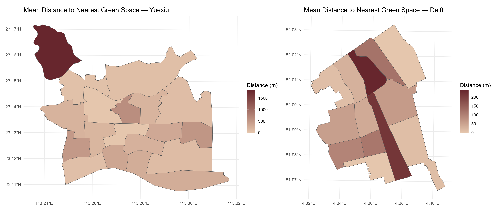
knitr::include_graphics(file.path(OUT_ROOT, "fig_buffer_coverage.png"))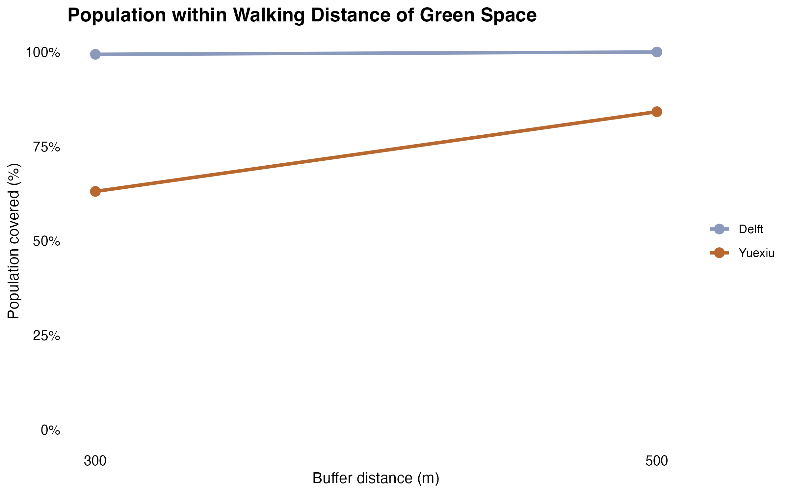
The Mean distance to nearest green space, reveals the mean distance the population within each neighbourhood has to travel to reach a green space. Delft’s scale tops at ~200m, even the worst-served wijk is close by Yuexiu standards. Yuexiu has one neighbourhood reaching 600m+ (the black patch in the northwest, same outlier as the blue-green ratio map, which had zero green space). The central strip of the high distance of neighbourhood to green space on the Delft map, corresponds to the rail corridor where green space is sparse. While both cities do not exhibit large disparity in accessibility to green space within each city, the between-city differences is more apparent evident in their maximum distance metrics Figure 2. This is also supported by the normalized walking distance to green space difference between the two cities on Figure 3.
knitr::include_graphics(file.path(OUT_ROOT, "fig_network_walk_access.png"))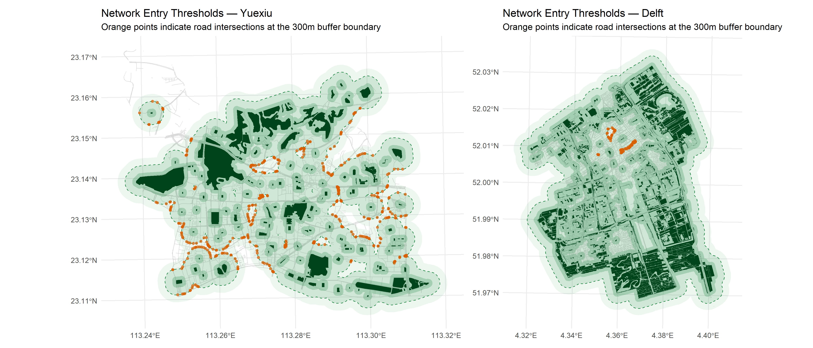
Finally, the network analysis presented on Figure 4 displays the access points of parks from road network, through intersecting a 300m green area buffer with road networks. Access points, visualized in orange, reveal a starking difference between the two cities. Within a 300m buffer, approximating to 3 to 4 minutes of walking, residents of Yuexiu historic district are able reach access points to green areas. In contrast to Yuexiu, Delft reveals a different spatial pattern. While fewer orange access points are mapped across Delft, its green spaces are distributed more evenly across the city. The widespread availability of green spaces is seen by its higher degree of buffer overlap, covering almost the entire city of Delft - that is different compared to Yuexiu, exhibiting more sparse distribution of urban green spaces. It can thus be concluded that while Yuexiu may exhibit more access point to parks, Delft may not exhibit as many access points, as most of the city, are already accessible to green areas, within 100-300-500m buffers (approximating to 1.5m, 3m, and 6.5m of walking distance).
Assess spatial justice through the relationship between population and access to green space. How equitable are green spaces distributed across administrative units in relation to population demographics?
NVDI species density relationship between connectivity and biodiversity relationship between demographics and biodiversity
which typologies perform best and worst comparison between delft and Guangzhou
knitr::include_graphics(file.path(OUT_ROOT, "fig_green_typology.png"))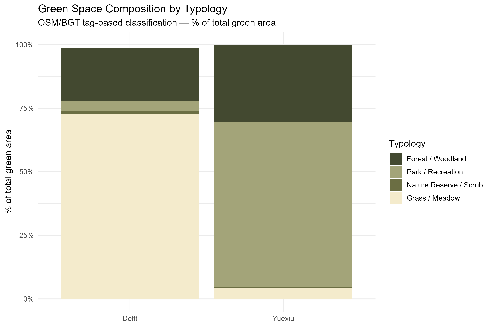
knitr::include_graphics(file.path(OUT_ROOT, "fig_ndvi_maps.png"))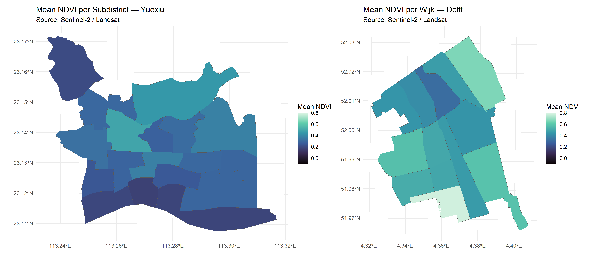
knitr::include_graphics(file.path(OUT_ROOT, "fig_gbif_density.png"))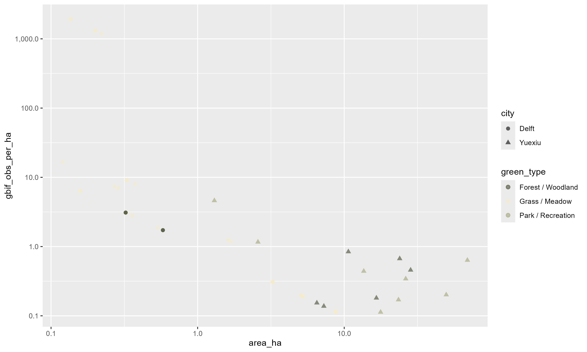
knitr::include_graphics(file.path(OUT_ROOT, "fig_blue_green_ratio.png"))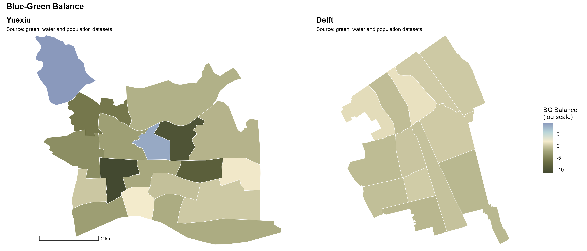
knitr::include_graphics(file.path(OUT_ROOT, "fig_ndvi_violin.png"))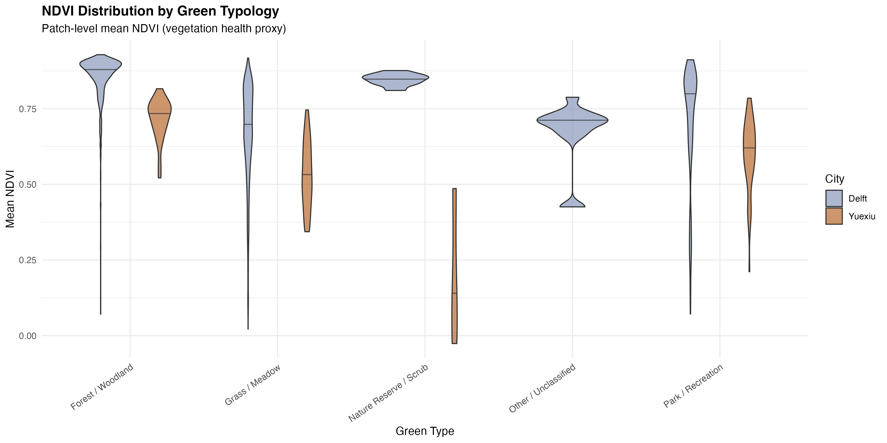
As background context, Figure (x) reveal the the green space composition in urban area taken from the Open-Street Map data (e.g. forests, nature reserve, etc) between the two cities. While Delft seem to be dominated by green or meadows, Yuexiu green space composition is dominated by parls/recreation. This makes sense because Delft is a smaller city in comparison to Yuexiu historical city center, that is still surrounded by denser urban areas development.
interpretation NDVI maps: Delft’s northwestern wijken are notably greener (high NDVI ≈ 0.7–0.8) while the central station area is lower. Yuexiu shows a patchwork. some subdistricts surprisingly high (remnant green), others very low (dense built fabric). NDVI is a ground-truth check on OSM data: a neighbourhood can have mapped parks but low NDVI (mowed grass) or unmapped tree canopy with high NDVI.
interpretation biodiversity observation density vs patch size: Two key patterns here. First, small patches have wildly variable densities, some tiny grass/meadow patches in Delft show 1000+ obs/ha, likely because they’re well-surveyed community sites. Second, large patches (10+ ha) consistently show low obs/ha, this is a well-known sampling artefact (observers cluster near entrances). Yuexiu’s large park/recreation patches sit in the bottom-right, suggesting under-recording rather than genuinely low biodiversity.
interpretation blue-green ratio: Delft’s canal-rich centre pushes one wijk to a ratio of ~4, reflecting its water-city heritage. Yuexiu has one dramatic outlier (ratio ~9) in the northwest, likely a water park or reservoir, while most subdistricts are near- zero (green-dominated or no water). This matters for NbS planning because blue and green infrastructure together provide better cooling and biodiversity than either alone. <- review this analysis, doesnt make sense, WIP ->> make the blue and green proportional to each other
interpretation NDVI violin: (1) Delft’s forest/woodland patches cluster tightly at NDVI ≈ 0.85, consistently dense canopy. (2) Yuexiu’s parks have wide spread from 0.35–0.75, meaning quality is highly variable. (3) Sports facilities in Yuexiu dip to NDVI ~0.15 (artificial turf / hardstanding). The tight vs wide violin shape is the signal: narrow = consistent quality, wide = uneven management.
Compare how strong these relationships are in different cities (Delft vs Guangzhou). How does urban green space relate to spatial justice in Delft compared to Guangzhou? which city performs better on each analysis? which one is more equitable
gini coefficient green space per capita inequalities relationship between population density and green access income correlation what neighbourhoods are troubled? does this have to do with the heritage core in delft as well as guangzhou (both heritage centres) When a Gini-coefficient is higher, it means there is a more unequal distribution of urban green spaces. Accessibility and spatial justice vary across different neighbourhoods.
knitr::include_graphics(file.path(OUT_ROOT, "fig_equity_correlations.png"))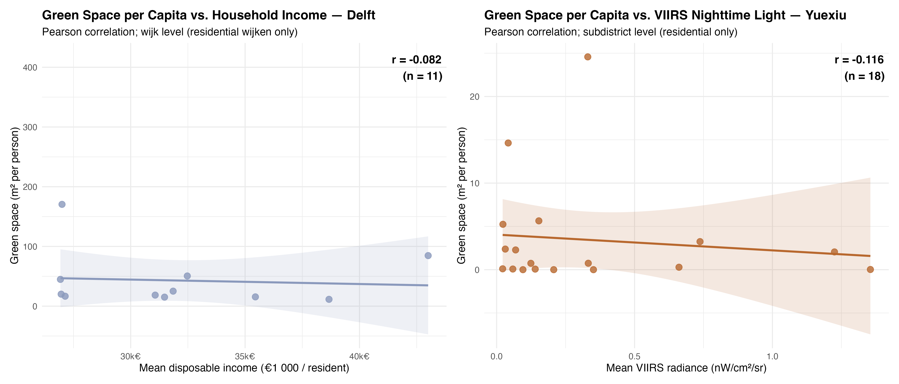
knitr::include_graphics(file.path(OUT_ROOT, "fig_bivariate_legend.png"))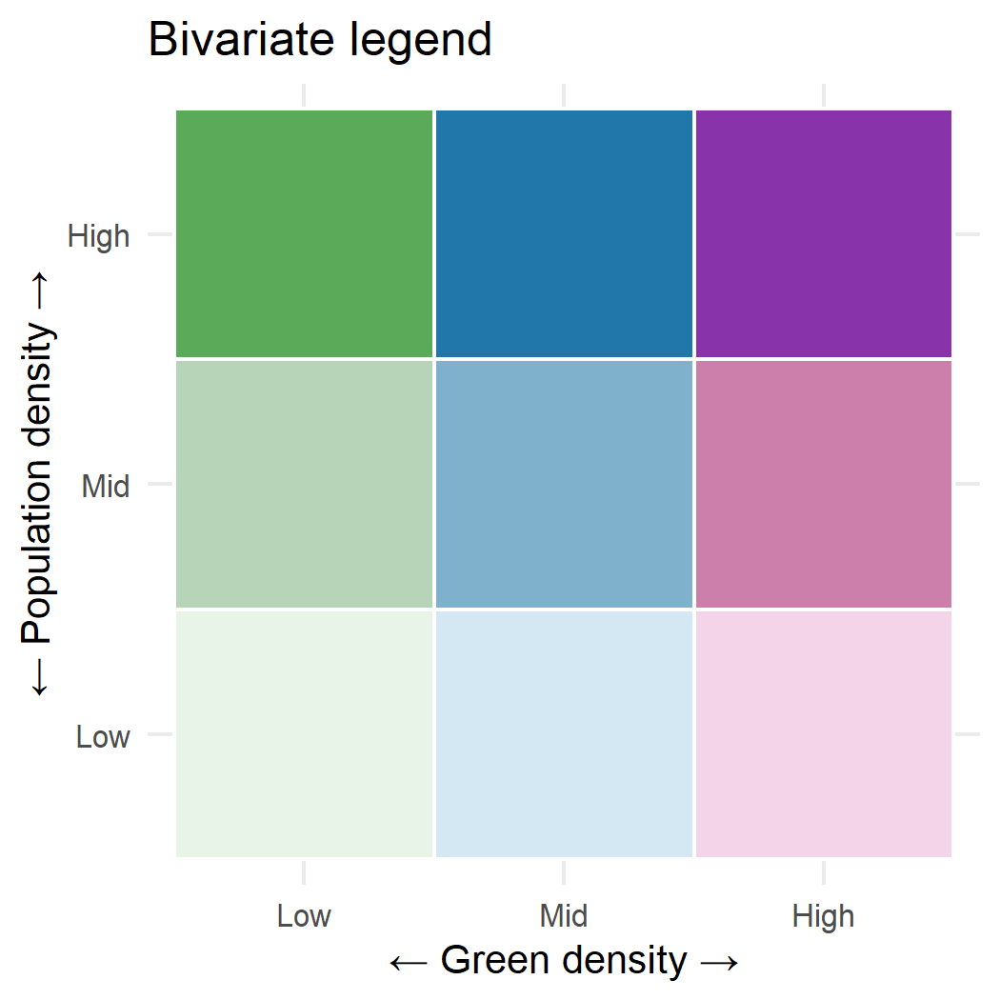
knitr::include_graphics(file.path(OUT_ROOT, "fig_bivariate_choropleth.png"))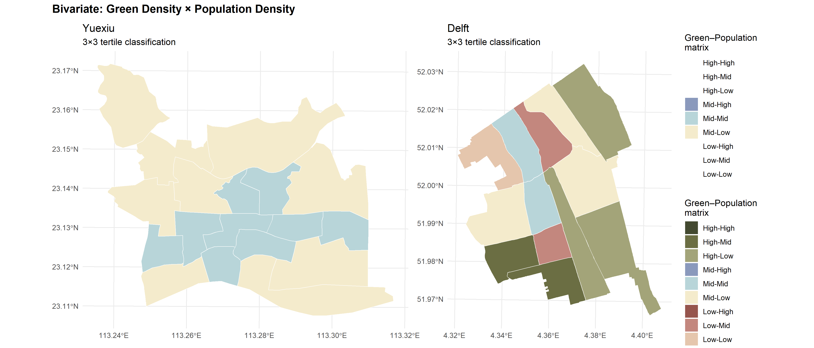
knitr::include_graphics(file.path(OUT_ROOT, "fig_lorenz_gini.png"))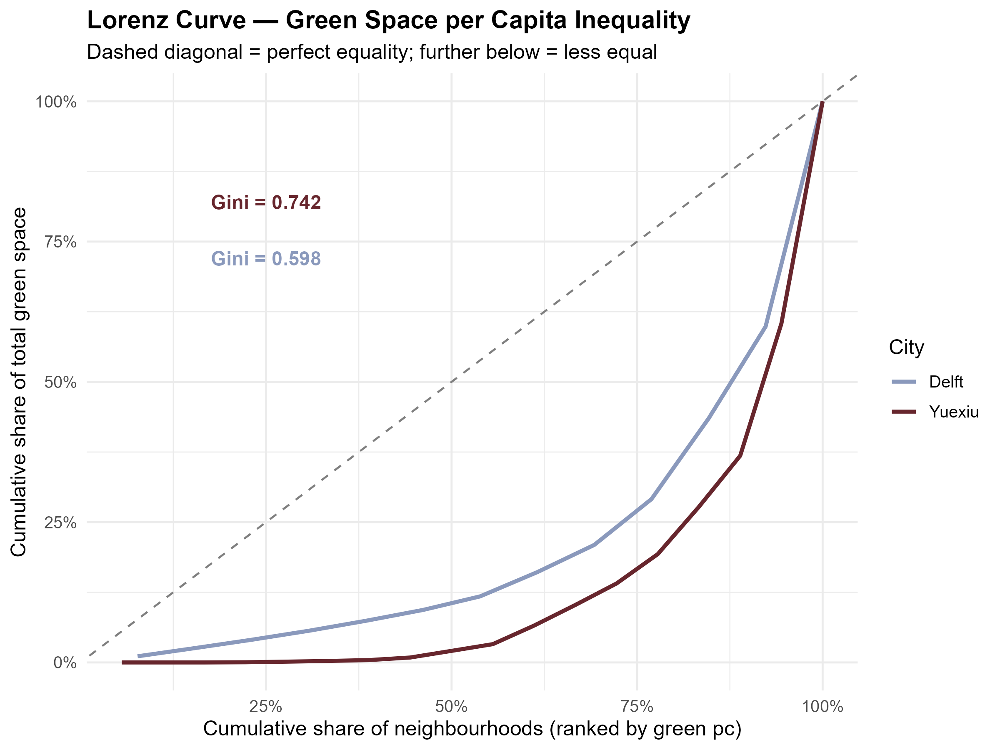
interpretation bivariate: Yuexiu has a cluster of green (Low-High) patches in its central-southern belt — densely populated subdistricts with almost no green. Delft is dominated by pink (High-Low) — low population, high green — which explains why coverage is near 100% but the Gini is still 0.605. The few dense Delft wijken have less green per person.
knitr::include_graphics(file.path(OUT_ROOT, "fig_enn_distribution.png"))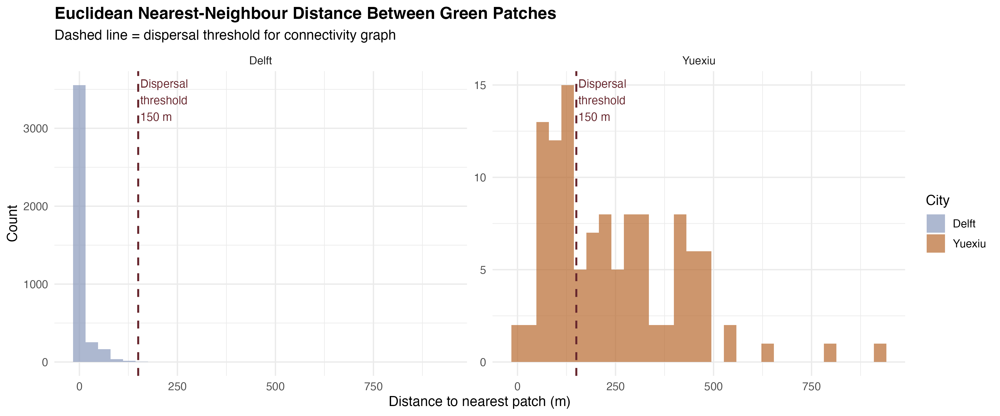
knitr::include_graphics(file.path(OUT_ROOT, "fig_fragmentation_metrics.png"))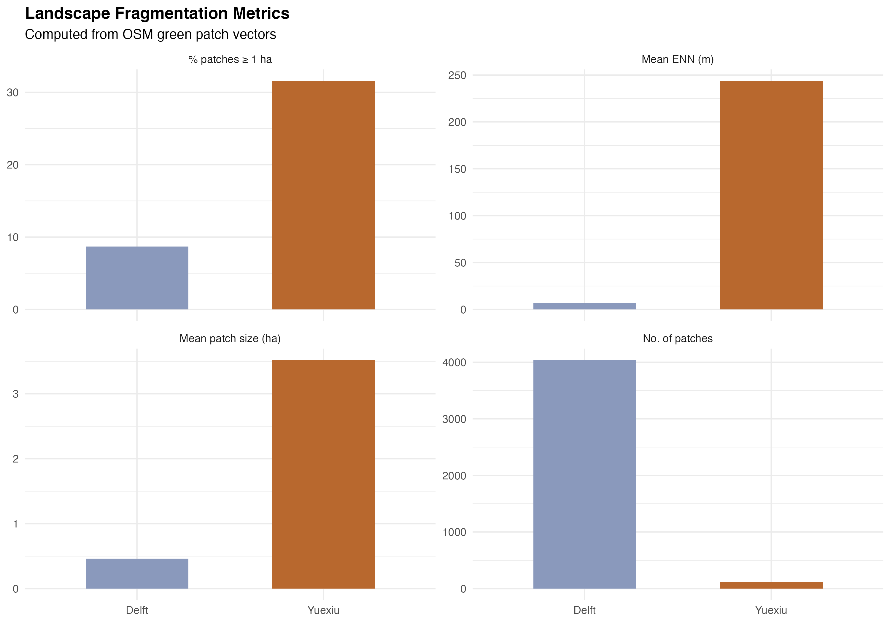
knitr::include_graphics(file.path(OUT_ROOT, "fig_connectivity_maps.png"))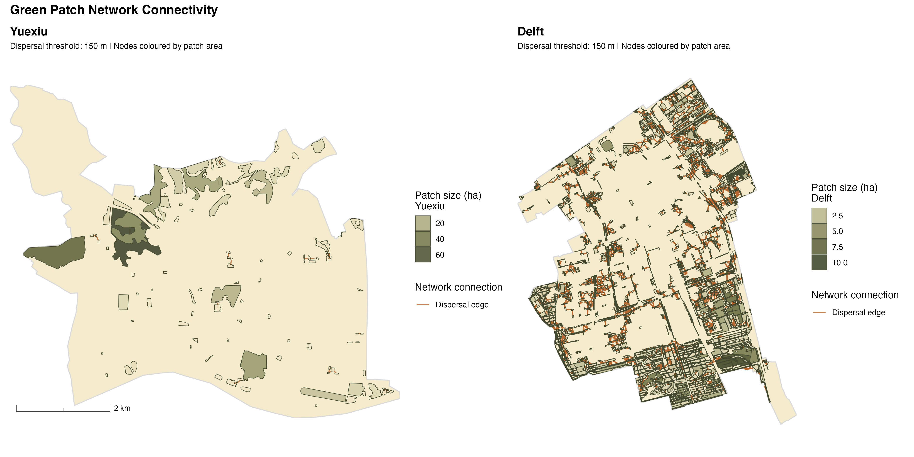
knitr::include_graphics(file.path(OUT_ROOT, "fig_betweenness_vs_area.png"))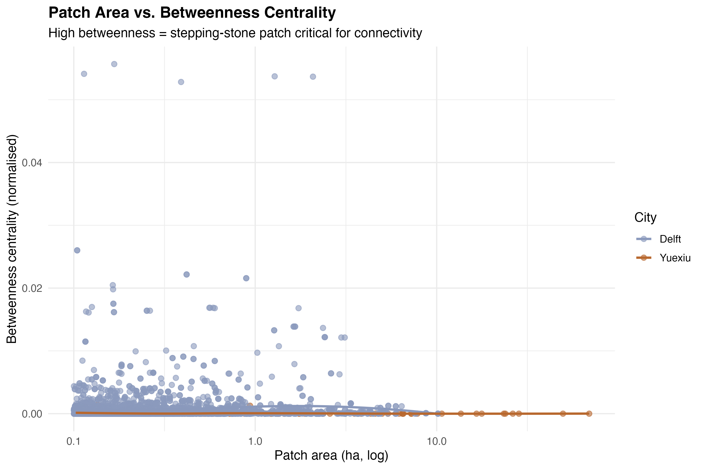
interpretation mean nearest distance to green patch: Delft ~10m vs Yuexiu ~200m. Delft’s green space is essentially continuous — patches are almost touching. Yuexiu’s patches are isolated islands separated by ~200m of built fabric on average. This is the connectivity crisis that drives our NbS corridor proposals. From a wildlife/biodiversity perspective, a 200m gap is a hard barrier for most invertebrates and small mammals.
Through applying MCDA, the study provides a method to overlay low-access zones and disconnected patches, which allows the planner/user (tbd) to map priority intervention areas.
Translate analytical findings into strategies for increasing UGS quality. How do the differences between the two cities show how connectivity and accessibility can improve spatial justice? What strategies are suggested to improve spatial justice? Potential interventions: green corridors, linear parks, canal-side ecological networks, pocket parks, urban forest, biodiversity stepping stones, street greening, green roofs and walls. - connect those to a weakness found in the analysis.
As sources are gathered through globally availbale datasets, methodology can be replicated in other cities/districts. Framework is also available on Github and independent of local planning systems. GIS workflow can be reproduced in QGIS and R indicators depending on local contexts.
OSM data completeness differs between cities and is a crowd-sourced data. This means that data gathered is not the most up-to-date nor accurate. Moreover, language barrier in accessing chinese dataset makes it more difficult to perform more direct comparison between the two cities, especially within the spatial justice aspect. Moreover, GBIF observations from Typology diversity & Biodiversity section may contain sampling bias as Chinese dataset is much more up to date in comparison to Delft dataset. more… High density in Guangzhou vs low density in Delft.
citizen participation through surveys ecosystem valuation (more in depth) running the workflow with more than 4 indicators
Spatial justice is not only determined by the quality of green space, but by how well green spaces are connected, accessible, and ecologically functional.